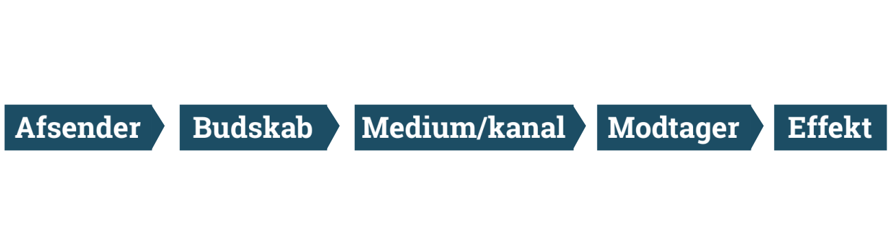
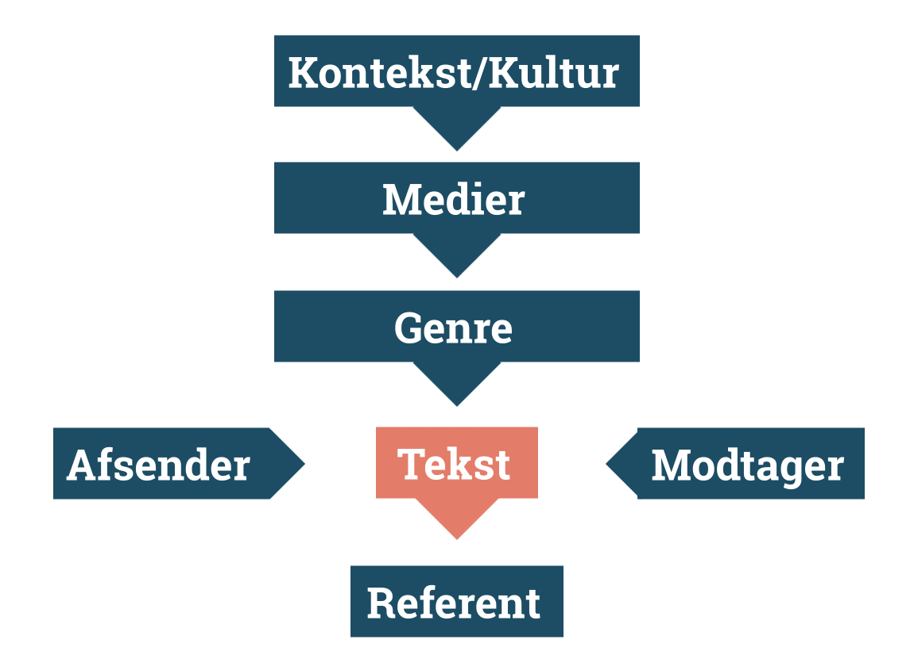

Kommunikation er vigtigt - specielt når det handler om at komme ud med et budskab - der skal gøres mange overvejelser, når man vil frem med et budskab - hvem er budskabet til og hvordan skal det ud? Kommunikationsteori er også relevant i tekstproduktion.
Laswells formel er et værktøj til at analysere og forstå medier, det kan f.eks være litteratur eller andre medier som f.eks TV. Den skal være med til at afgøre hvilket formål kommunikationen mellem afsender og modtager har. Den kan også bruges til hvordan man selv skal kommunikere et budskab ud til en modtager. laswells formel bliver brugt rigtig meget i sociale medier og marketing. Modellen bruges bl.a. også til at finde ud af hvordan et bestemt budskab kommer ud til den rette modtager.
Laswells model består af 5 elementer som skal være med til at afgøre hvem og hvad et budskab er rettet i mod. De 5 elementer er; afsender, budskab, medium/kanal, modtager og effekt.
Når man læser modellen, skal den forståes sådan her: hvem siger hvad gennem hvilken kanal til hvem og med hvilken effekt?
IMK modellen har meget fokus på hvordan et budskab bliver fortolket og har meget fokus på den kulturelle kontekst. Modellen indeholder også genre: fortællende, intruerende, argumenterende, dramatiske osv. - og koder.
Det kan bruges til at optimere ifht. brugeroplevelsen i en produktion. Kan der arbejdes med teksten for at budskabbet trækker anderledes i gennem.
Man kan bruge det til hvis man bygger en hjemmeside - hvilke overvejser bliver der gjort for at fremme et budskab til en bestemt målgruppe. Det kan også bruges i forhold til social medier og marketing.